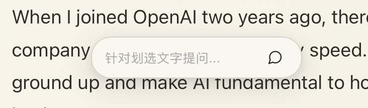

Move between languages.
Keep intelligence in its place.
A calm, paper-inspired home for your feeds, with summaries and contextual translation available when they help—not competing for your attention.

EDITORIAL EXPERIENCE
A reading ritual built for beauty and focus
01 / BILINGUAL
Side-by-side translation
Keep each translated paragraph beside its source so long-form reading never loses context.

02 / EXPLAIN & ASK
Explain & ask
Select a passage to ask a focused question or get unfamiliar terms, ideas, and context explained by AI.


03 / TRANSLATE
Translate in place
Get a contextual translation for the selected passage without leaving the reader.

Support PaperRss
PaperRss is independently developed and open source. If it makes your reading better, you can support continued development through PayPal or share feedback on GitHub.
INSTALLATION GUIDE
Install and Open PaperRss
The current release is not notarized by Apple. If macOS says the app cannot be verified or is damaged, run:
sudo xattr -rd com.apple.quarantine /Applications/PaperRss.app